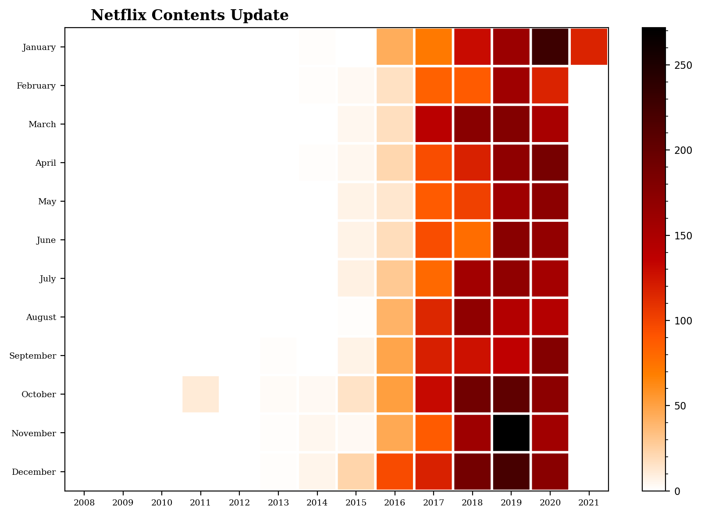

캐글 (1)
Simple Matplotlib & Visualization Tips 공부하기
kaggle 관련 글
Simple Matplotlib & Visualization Tips 공부하기
https://www.kaggle.com/subinium/simple-matplotlib-visualization-tips/notebook
해당과정을 필사하였으며 영어로 되어있는 부분은 다시 정리해서 적었다.
- Table of Contents
Setting dpi figsize title
- Alignments
subplots, tight_layout subplot2grid add_axes add_gridspec
- Colormap
diverging qualitative sequential scientific
- Text & Annotate & Patch
parameter text example patches example
- Details & Example
font weight, color, size, etc Horizontal and Vertical (barplot) Border(edge) color and thickness Main Color & Sub Color Transparency Span
- MEME
xkcd style
import numpy as np
import matplotlib as mpl
import matplotlib.pyplot as plt
#matplotlib.pyplot 모듈의 각각의 함수를 사용해서 간편하게 그래프를 만들고 변화를 줄 수 있습니다.
import matplotlib.gridspec as gridspec
# gridspec 에는 Figure 내에서 격자 모양의 패턴으로여러 Axes 레이아웃하는 데 도움이되는 클래스가 포함되어 있습니다.
import seaborn as sns
# Seaborn은 Matplotlib에 기반하여 제작된 파이썬 데이터 시각화 모듈
print(f"Matplotlib Version :{mpl.__version__}")
print(f"Seaborn Version :{sns.__version__}")
import pandas as pd
netflix_titles=pd.read_csv("netflix_titles.csv")
Matplotlib Version :3.3.2
Seaborn Version :0.11.0
Setting
해상도 설정 matplotlib의 기본 해상도는 떨어지는 편이라고 한다.
또한 그래프의 모양에 따라서 느낌이 달라지기 때문에 크기를 많이 변경해봐야한다.
plt.title() 그래프의 제목 그리기
ax.set_title() 개별 서브 플롯에 제목을 추가하는 데 사용
fig.suptitle() 모든 서브 플롯에 공통 인 메인 타이틀을 추가
plt.rcParams['figure.dpi'] = 200 # or dpi=200
Alignments
matplotlib 레이아웃과 설계의 조합이다.
두 개의 그래프가 한 개의 그래프보다 시각적으로 의미적으로 모두 좋다.
두 개를 비교하기 위해 가장 쉬운 방법은 직사각형으로 배치하는 것이다.
subplot을 통하여 초기 크기로 시작할 수 있다.
subplots() 하나의 그림에 여러 플롯을 그리기
subplot2grid() 일반 그리드 내부의 특정 위치에 서브플롯을 생성
add_axes() 축 추가하기
gridspec() Figure 내에 서브플롯을 배치
add_subplot() Figure 내에 서브플롯을 배치
inset_axes() 하위에 축 추가하기
make_axes_locatable() 축 배치하기
fig, axes = plt.subplots(2, 3, figsize=(8, 5))
plt.show()
# tight_layout을 통해 그래프 사이에 여유공간이 생김
fig,axes =plt.subplots(2, 3, figsize=(8, 5))
plt.tight_layout()
plt.show()
# subplot이 항상 같을 필요가 없음. 이 때 subplot2grid를 사용
fig=plt.figure(figsize=(8,5)) #시작 크기 지정
ax=[None for _ in range(6)]
ax[0]=plt.subplot2grid((3,4),(0,0),colspan=4)
ax[1]=plt.subplot2grid((3,4),(1,0),colspan=1)
ax[2]=plt.subplot2grid((3,4),(1,1),colspan=1)
ax[3]=plt.subplot2grid((3,4),(1,2),colspan=1)
ax[4]=plt.subplot2grid((3,4),(1,3),colspan=1,rowspan=2)
ax[5]=plt.subplot2grid((3,4),(2,0),colspan=3)
for ix in range(6):
ax[ix].set_title('ax[{}]'.format(ix)) # subplot에 제목 생성
#ticks는 축에 표시되는 숫자
ax[ix].set_xticks([])
ax[ix].set_yticks([])
fig.tight_layout()
plt.show()
fig = plt.figure(figsize=(8, 5))
ax = [None for _ in range(4)]
#add_axes를 이해하기 힘들어서 값들을 눈에 띄게 변경해보았다.[왼쪽, 아래쪽, 너비, 높이]
ax[0]=fig.add_axes([0.1,0.2,0.3,0.4])
ax[1]=fig.add_axes([0.3,0.4,0.5,0.6])
ax[2]=fig.add_axes([0.5,0.6,0.7,0.8])
ax[3]=fig.add_axes([0.6,0.7,0.8,0.9])
for ix in range(4):
ax[ix].set_title('ax[{}]'.format(ix))
ax[ix].set_xticks([])
ax[ix].set_yticks([])
plt.show()

# gridspec을 이용하여 만들기
fig=plt.figure(figsize=(8, 5))
gs=fig.add_gridspec(3, 3) #(3x3 크기)
ax=[None for _ in range(5)]
ax[0]=fig.add_subplot(gs[0, :])
ax[0].set_title('gs[0, :]')
ax[1]=fig.add_subplot(gs[1, :-1])
ax[1].set_title('gs[1, :-1]')
ax[2]=fig.add_subplot(gs[1:, -1])
ax[2].set_title('gs[1:, -1]')
ax[3]=fig.add_subplot(gs[-1, 0])
ax[3].set_title('gs[-1, 0]')
ax[4]=fig.add_subplot(gs[-1, -2])
ax[4].set_title('gs[-1, -2]')
for ix in range(5):
ax[ix].set_xticks([])
ax[ix].set_yticks([])
plt.tight_layout()
plt.show()
fig,ax=plt.subplots()
axin1=ax.inset_axes([0.8, 0.1, 0.15, 0.15])
plt.show()
from mpl_toolkits.axes_grid1.axes_divider import make_axes_locatable
fig,ax=plt.subplots(1, 1)
ax_divider=make_axes_locatable(ax)
ax=ax_divider.append_axes("right", size="7%", pad="2%")
plt.show()
Colormap
https://medium.com/nightingale/how-to-choose-the-colors-for-your-data-visualizations-50b2557fa335
그래프에서 색상은 중요한 요소이다
diverging 중앙을 기준으로 색상 변경
qualitative 범주별로 색상 변경
sequential 순차적으로 색상 변경
scientific 다양한 색상으로 순차적 변경
def cmap_plot(cmap_list, ctype):
cmaps=cmap_list
n=len(cmaps)
fig=plt.figure(figsize=(8.25, n*.20), dpi=200)
ax=plt.subplot(1, 1, 1, frameon=False, xlim=[0,10], xticks=[], yticks=[])
fig.subplots_adjust(top=0.99, bottom=0.01, left=0.18, right=0.99)
y,dy,pad = 0, 0.3, 0.08
ticks,labels = [], []
for cmap in cmaps[::-1]:
Z=np.linspace(0,1,512).reshape(1,512)
plt.imshow(Z, extent=[0,10,y,y+dy], cmap=plt.get_cmap(cmap))
ticks.append(y+dy/2)
labels.append(cmap)
y = y + dy + pad
ax.set_ylim(-pad,y)
ax.set_yticks(ticks)
ax.set_yticklabels(labels)
ax.tick_params(axis='y', which='both', length=0, labelsize=5)
plt.title(f'{ctype} Colormap', fontweight='bold', fontsize=8)
plt.show()
#diverging
#양쪽 끝으로 갈수록 색이 어두워진다.
diverge_cmap=('PRGn', 'PiYG', 'RdYlGn', 'BrBG', 'RdGy', 'PuOr', 'RdBu', 'RdYlBu', 'Spectral', 'coolwarm_r', 'bwr_r', 'seismic_r')
cmap_plot(diverge_cmap, 'Diverging')
#Qualitative Colormap
#최대 10가지 색상을 구성하고 점점 더 작은 범주, 다른 범주와 그룹화
#유사한 색상은 피하고 채도나 밝기보다 색을 분명하게 바꾸는 것이 좋다.
qualitative_cmap=('tab10', 'tab20', 'tab20b', 'tab20c',
'Pastel1', 'Pastel2', 'Paired',
'Set1', 'Set2', 'Set3', 'Accent', 'Dark2' )
cmap_plot(qualitative_cmap, 'Qualitative')
#Sequential Colormap
#밀도 표현에 효과적이고 지도 그래프에도 효과적이다.
#밝기의 변화에 따라서 값을 비교할 수 있다.
sequential_cmap=('Greys', 'Reds', 'Oranges',
'YlOrBr', 'YlOrRd', 'OrRd', 'PuRd', 'RdPu', 'BuPu',
'Purples', 'YlGnBu', 'Blues', 'PuBu', 'GnBu', 'PuBuGn', 'BuGn',
'Greens', 'YlGn','bone', 'gray', 'pink', 'afmhot', 'hot', 'gist_heat', 'copper',
'Wistia', 'autumn_r', 'summer_r', 'spring_r', 'cool', 'winter_r')
cmap_plot(sequential_cmap, 'Sequential')
netflix_date = netflix_titles[['date_added']].dropna()
netflix_date['year'] = netflix_date['date_added'].apply(lambda x : x.split(', ')[-1])
netflix_date['month'] = netflix_date['date_added'].apply(lambda x : x.lstrip().split(' ')[0])
month_order = ['January', 'February', 'March', 'April', 'May', 'June', 'July', 'August', 'September', 'October', 'November', 'December'][::-1]
df = netflix_date.groupby('year')['month'].value_counts().unstack().fillna(0)[month_order].T
#응용하면 이런 그래프도 만들어진다.
plt.figure(figsize=(10,7),dpi=200)
plt.pcolor(df,cmap='gist_heat_r',edgecolors='white',linewidths=2)
plt.xticks(np.arange(0.5,len(df.columns),1),df.columns,fontsize=7,fontfamily='serif')
plt.yticks(np.arange(0.5,len(df.index),1),df.index,fontsize=7,fontfamily='serif')
plt.title('Netflix Contents Update',fontsize=12,fontfamily='serif',fontweight='bold',position=(0.23,1.0+0.02))
cbar=plt.colorbar()
cbar.ax.tick_params(labelsize=8)
cbar.ax.minorticks_on()
plt.show()

#Scientific Colormap
scientific_cmap=('viridis','plasma','inferno','magma')
cmap_plot(scientific_cmap,'Scientific')
Text & Annotate & Patch
그래프에 세부 사항을 넣을 수 있다.
ax.text와 ax.annotate는 유사하지만 다르다.
ax.text 그래프의 비율 좌표를 표현
ax.annotate 그래프의 좌표를 표현
va, ha 현재 좌표가 텍스트의 중심, 왼쪽, 오른쪽을 결정
color 색상과 RGB값 선택
bbox 텍스트를 포장하는 상자 표현
facecolor와 edgecolor가 분리되어있음
pad로 html에서 처럼 padding 가능
boxstyle로 직사각형의 모서리 조정 가능
fig,ax=plt.subplots(figsize=(5, 5), dpi=100)
# Gray Box
ax.text(0.1, 0.9, 'Test', color='gray', va="center", ha="center")
# Red Box
ax.text(0.3, 0.7, 'Test', color='red', va="center", ha="center",
bbox=dict(facecolor='none', edgecolor='red'))
# Blue Box
ax.text(0.5, 0.5, 'Test', color='blue', va="center", ha="center",
bbox=dict(facecolor='none', edgecolor='blue', pad=10.0))
# Green Box
ax.text(0.7, 0.3, 'Test', color='green', va="center", ha="center",
bbox=dict(facecolor='none', edgecolor='green', boxstyle='round'))
# Black
ax.text(0.9, 0.1, 'Test', color='black', va="center", ha="center",
bbox=dict(facecolor='none', edgecolor='black', boxstyle='round, pad=0.5'))
ax.set_xticks([])
ax.set_yticks([])
plt.show()
효과적인 표현을 위한 그림들
import matplotlib.path as mpath
import matplotlib.lines as mlines
import matplotlib.patches as mpatches
from matplotlib.collections import PatchCollection
def label(xy, text):
y = xy[1] - 0.15
plt.text(xy[0], y, text, ha="center", family='sans-serif', size=14)
fig, ax = plt.subplots()
grid = np.mgrid[0.2:0.8:3j, 0.2:0.8:3j].reshape(2, -1).T
patches = []
# 원
circle = mpatches.Circle(grid[0], 0.1, ec="none")
patches.append(circle)
label(grid[0], "Circle")
# 직사각형
rect = mpatches.Rectangle(grid[1] - [0.025, 0.05], 0.05, 0.1, ec="none")
patches.append(rect)
label(grid[1], "Rectangle")
# wedge
wedge = mpatches.Wedge(grid[2], 0.1, 30, 270, ec="none")
patches.append(wedge)
label(grid[2], "Wedge")
# Polygon
polygon = mpatches.RegularPolygon(grid[3], 5, 0.1)
patches.append(polygon)
label(grid[3], "Polygon")
# ellipse
ellipse = mpatches.Ellipse(grid[4], 0.2, 0.1)
patches.append(ellipse)
label(grid[4], "Ellipse")
# arrow
arrow = mpatches.Arrow(grid[5, 0] - 0.05, grid[5, 1] - 0.05, 0.1, 0.1,
width=0.1)
patches.append(arrow)
label(grid[5], "Arrow")
# path patch
Path = mpath.Path
path_data = [
(Path.MOVETO, [0.018, -0.11]),
(Path.CURVE4, [-0.031, -0.051]),
(Path.CURVE4, [-0.115, 0.073]),
(Path.CURVE4, [-0.03, 0.073]),
(Path.LINETO, [-0.011, 0.039]),
(Path.CURVE4, [0.043, 0.121]),
(Path.CURVE4, [0.075, -0.005]),
(Path.CURVE4, [0.035, -0.027]),
(Path.CLOSEPOLY, [0.018, -0.11])]
codes, verts = zip(*path_data)
path = mpath.Path(verts + grid[6], codes)
patch = mpatches.PathPatch(path)
patches.append(patch)
label(grid[6], "PathPatch")
# fancy box
fancybox = mpatches.FancyBboxPatch(
grid[7] - [0.025, 0.05], 0.05, 0.1,
boxstyle=mpatches.BoxStyle("Round", pad=0.02))
patches.append(fancybox)
label(grid[7], "FancyBboxPatch")
# line
x, y = np.array([[-0.06, 0.0, 0.1], [0.05, -0.05, 0.05]])
line = mlines.Line2D(x + grid[8, 0], y + grid[8, 1], lw=5., alpha=0.3)
label(grid[8], "Line2D")
colors = np.linspace(0, 1, len(patches))
collection = PatchCollection(patches, cmap=plt.cm.hsv, alpha=0.3)
collection.set_array(np.array(colors))
ax.add_collection(collection)
ax.add_line(line)
plt.axis('equal')
plt.axis('off')
plt.tight_layout()
plt.show()
Details & Examples
그림에 대한 다양한 설정
Horizontal and Vertical (barplot)
Border(edge) color and thickness
Main Color & Sub Color
Transparency
Span
Font Weight, Color, Family, Size …
글꼴 굵기, 크기를 설정할 수 있다.
serifs와 sans serifs도 차이가 있다.
fontsize, color, fontweight, fontfamily같은 키워들을 이용할 수 있다.
Horizontal keyboard & Vertical (barplot)
x축의 수가 많으면 가독성이 낮다.
예를들면 countplot은 x축과 겹치는 경우가 발생한다.
이럴 때는 수직으로 배치하면 가독성이 좋다.
Border(Edge) Color & Thickness (Width)
별도의 테두리를 이용하여 가독성을 높일 수 있다.
R에서 자주 이용한다.
경계선은 밝기와 투명도를 조절하여 구별하는 것이 좋다.
Main Color & Sub Color
화려한 색상보다 정보의 전달을 편하게 하는 것에 목적을 둔다.
그래프의 종류에 따라 색상도 변경하는 것이 좋다.
특정 부품을 강조 표시할 때 목록으로 전달하는 것이 좋다.
from matplotlib.ticker import FuncFormatter
def age_band(num):
for i in range(1, 100):
if num < 10*i :
return f'under {i*10}'
titanic_train=pd.read_csv("train.csv")
titanic_train['age_band']=titanic_train['Age'].apply(age_band)
titanic_age = titanic_train[['age_band', 'Survived']].groupby('age_band')['Survived'].value_counts().sort_index().unstack().fillna(0)
titanic_age['Survival rate']=titanic_age[1] / (titanic_age[0] + titanic_age[1]) * 100
fig, ax=plt.subplots(1, 2, figsize=(18, 7), dpi=300)
# ax1
ax[0].bar(titanic_age['Survival rate'].index, titanic_age['Survival rate'], color='gray')
ax[0].set_title('Age Band & Survival Rate(Before)')
# ax2
color_map=['gray' for _ in range(9)]
color_map[0] = color_map[8] = '#3caea3'
ax[1].bar(titanic_age['Survival rate'].index, titanic_age['Survival rate'], alpha=0.7, color=color_map, width=0.6, edgecolor='black', linewidth=1.2)
ax[1].set_title('Age Band & Survival Rate(After)', fontsize=15, fontweight='bold', position=(0.25, 1.0+0.05))
for i in titanic_age['Survival rate'].index:
ax[1].annotate(f"{titanic_age['Survival rate'][i]:.02f}%",
xy=(i, titanic_age['Survival rate'][i] + 2),
va = 'center', ha='center',fontweight='bold', color='#383838')
ax[1].yaxis.set_major_formatter(FuncFormatter(lambda y, _: f'{y:}%'))
plt.suptitle('* Focus on survival rates for young and old', x=0.65, y=0.94, color='gray')
plt.subplots_adjust(left=0.5, right=0.8)
plt.tight_layout()
plt.show()
Main Color & Sub Color
산점도와 같이 많은 점들이 겹치면 투명도가 중요하다.
투명도를 이용해서 둘 이상의 그림을 함께 배치할 수 있다.
import seaborn as sns
exam_data=pd.read_csv("StudentsPerformance.csv")
fig, ax=plt.subplots(1, 2, figsize = (15, 7), dpi=150)
ax[0].scatter(x='math score', y='reading score',data=exam_data, color='gray')
ax[0].set_title('Before')
ax[1].scatter(x='math score', y='reading score',data=exam_data[exam_data['gender']=='male'], color='skyblue', alpha=0.5, label='Male', s=70)
ax[1].scatter(x='math score', y='reading score',data=exam_data[exam_data['gender']=='female'], color='salmon', alpha=0.5, label='Female', s=70)
ax[1].set_title('After', fontsize=15, fontweight='bold')
ax[1].legend()
plt.gca().spines['top'].set_visible(False)
plt.gca().spines['right'].set_visible(False)
plt.show()
Span
axvspan: 수직 axhspan: 수평
sns.set_style('whitegrid') # plot with grid
movie=netflix_titles[netflix_titles['type'] == 'Movie']
rating_order=['G', 'TV-Y', 'TV-G', 'PG', 'TV-Y7', 'TV-Y7-FV', 'TV-PG', 'PG-13', 'TV-14', 'R', 'NC-17', 'TV-MA']
movie_rating=movie['rating'].value_counts()[rating_order]
fig, ax=plt.subplots(1, 1, figsize=(14, 7), dpi=200)
ax.bar(movie_rating.index, movie_rating, color="#d0d0d0", width=0.6, edgecolor='black')
ax.set_title(f'Distribution of Movie Rating (Before)', fontweight='bold')
plt.show()
def rating_barplot(data, title, height, h_lim=None):
fig, ax=plt.subplots(1,1, figsize=(14, 7), dpi=200)
if h_lim:
ax.set_ylim(0, h_lim)
ax.bar(data.index, data, color="#e0e0e0", width=0.52, edgecolor='black')
color=['green', 'blue', 'orange', 'red']
span_range=[[0, 2], [3, 6], [7, 8], [9, 11]]
for idx, sub_title in enumerate(['Little Kids', 'Older Kids', 'Teens', 'Mature']):
ax.annotate(sub_title,xy=(sum(span_range[idx])/2 ,height),xytext=(0,0), textcoords='offset points',
va="center", ha="center",color="w", fontsize=16, fontweight='bold',
bbox=dict(boxstyle='round4', pad=0.4, color=color[idx], alpha=0.6))
ax.axvspan(span_range[idx][0]-0.4,span_range[idx][1]+0.4, color=color[idx], alpha=0.07)
ax.set_title(f'Distribution of {title} Rating (After)', fontsize=15, fontweight='bold', position=(0.20, 1.0+0.03))
plt.show()
rating_barplot(movie_rating,'Movie', 1200, 1400)

MEME : xkcd theme
import matplotlib
matplotlib.font_manager._rebuild()
with plt.xkcd():
fig=plt.figure()
ax=fig.add_axes((0.1, 0.2, 0.8, 0.7))
ax.spines['right'].set_color('none')
ax.spines['top'].set_color('none')
ax.set_xticks([])
ax.set_yticks([])
ax.set_ylim([-30, 10])
data=np.ones(100)
data[70:]-=np.arange(30)
ax.annotate('THE DAY I REALIZED\nI COULD COOK BACON\nWHENEVER I WANTED',
xy=(70, 1), arrowprops=dict(arrowstyle='->'), xytext=(15, -10))
ax.plot(data)
ax.set_xlabel('time')
ax.set_ylabel('my overall health')
fig.text(0.5, 0.05,'"Stove Ownership" from xkcd by Randall Munroe',ha='center')
with plt.xkcd():
fig=plt.figure()
ax=fig.add_axes((0.1, 0.2, 0.8, 0.7))
ax.bar([0, 1], [0, 100], 0.25)
ax.spines['right'].set_color('none')
ax.spines['top'].set_color('none')
ax.xaxis.set_ticks_position('bottom')
ax.set_xticks([0, 1])
ax.set_xticklabels(['CONFIRMED BY\nEXPERIMENT', 'REFUTED BY\nEXPERIMENT'])
ax.set_xlim([-0.5, 1.5])
ax.set_yticks([])
ax.set_ylim([0, 110])
ax.set_title("CLAIMS OF SUPERNATURAL POWERS")
fig.text(0.5, -0.05,'"The Data So Far" from xkcd by Randall Munroe',ha='center')
plt.show()